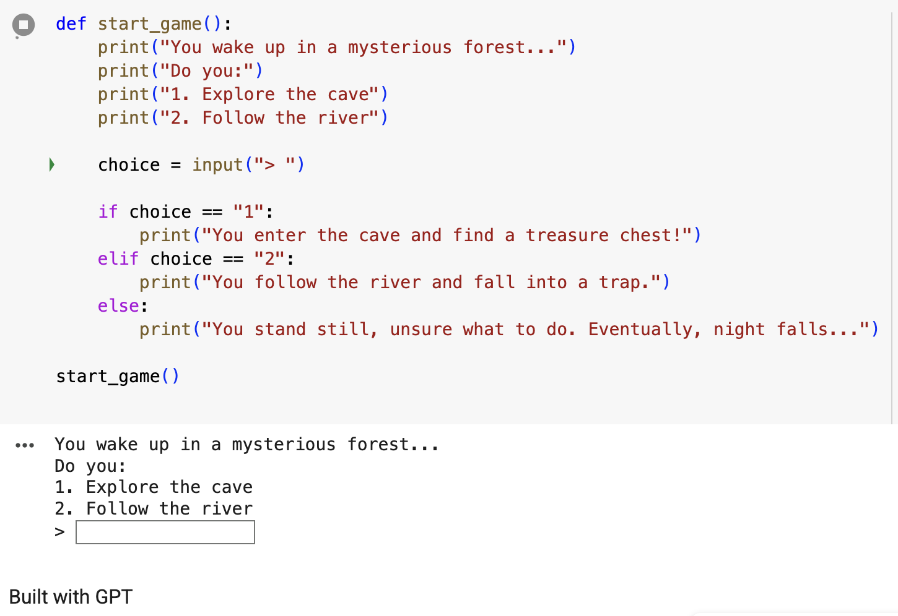

GPT, Make Me a Game: Can an LLM Be My Coding Buddy?
I’ve used ChatGPT for plenty of things — summarizing readings, writing emails, generating ideas — but I’ve never tried to build something with it. So for this post, I decided to test GPT’s programming chops by asking it to help me build a playable game from scratch (P.S. I have 0 experience coding whatsoever).
Coding
Creativity
GPT-4
Author
Carlos Lama
Published
April 20, 2025
GPT, Make Me a Game: Can an LLM Be My Coding Buddy?

Introduction
I’ve used ChatGPT for plenty of things — summarizing readings, writing emails, generating ideas — but I’ve never tried to build something with it. So for this post, I decided to test GPT’s programming chops by asking it to help me build a playable game from scratch (P.S. I have 0 experience coding whatsoever).
No prior templates, no external tools. Just me, GPT-4, and a vague idea: “Let’s make a text-based adventure game that runs in the terminal.”
Step 1: The Prompt
I started with something simple:
Me: - “Hi! I want to build a simple terminal-based game in Python. Can you help me create a short text-based adventure game with a few choices and outcomes?”
GPT immediately replied with enthusiasm (as always), and provided a full code block:
def start_game():print("You wake up in a mysterious forest...")print("Do you:")print("1. Explore the cave")print("2. Follow the river") choice =input("> ")if choice =="1":print("You enter the cave and find a treasure chest!")elif choice =="2":print("You follow the river and fall into a trap.")else:print("You stand still, unsure what to do. Eventually, night falls...")start_game()
You wake up in a mysterious forest...
Do you:
1. Explore the cave
2. Follow the river
It wasn’t groundbreaking, but hey — it ran! A few lines of code, some branching logic, and a spooky forest setup. We had a game. 🎉
Step 2: Iterating With GPT
Feeling ambitious, I asked GPT to expand it:
Me: - “Add more branches and a health system. Make the game slightly longer, with at least 3 scenes.”
GPT gave me a longer version with multiple decisions, some added challenge (like “lose 10 health”), and even a basic loop to track the player’s health.
But then… errors.
I tried running the code and hit this:
UnboundLocalError: local variable 'health' referenced before assignment
Classic Python scoping issue. I sent the error back to GPT:
Me: - “This error shows up — can you fix it?”
GPT: - “Ah, yes! The issue is that ‘health’ is being modified inside a function but not declared as global. Let me fix that.”
And it did. Well… mostly. Some fixes worked. Others introduced new issues. For example, when I asked GPT to “add inventory tracking,” it hallucinated items and functions that didn’t exist:
inventory.append("torch")if has_item("key"):# ...
Except has_item() was never defined. Nor was inventory initialized. This happened a lot.
Step 3: The Final Game
After several prompt cycles, I ended up with a fully playable (and mildly absurd) mini-adventure. You wake up in a haunted house, collect a sword, get attacked by a ghost, and either escape or perish based on your choices and inventory.
It looked something like this:
You wake up in a dark room. A ghost approaches.Do you:1. Fight the ghost2. Run out the door>1You swing your sword. The ghost vanishes!You survive and find a secret exit. You win!
Honestly? It was kind of fun.
What GPT Got Right
Great structure suggestions: It laid out game logic well and kept things readable.
Explained code clearly: When I asked questions, it responded with simple explanations.
Quick iterations: It was like having a super fast (but slightly forgetful) coding buddy.
What GPT Got Wrong
Syntax bugs: It occasionally introduced variables it never defined.
Overpromising: It hallucinated functions like has_item() or “magic door” mechanics that didn’t work.
Context drift: Over time, it forgot earlier mechanics (like health points) unless I reminded it.
💭 Final Thoughts
GPT didn’t build me Elden Ring, but it did walk me through the logic of simple game design. It acted more like a coach than a coder — offering suggestions, explanations, and bugs in equal measure.
The coolest part? I learned a ton in the process. Debugging GPT’s hallucinations actually made me a more careful reader of my own code.
🔗 Reflection
This mini-project reminded me how LLMs can both assist and mislead. They don’t “understand” the game — they predict what a helpful-sounding game should look like. And yet, with good prompting and iteration, they can absolutely jumpstart a creative idea.
Would I use GPT again for a coding side quest? Definitely. Would I ship anything it gave me directly to production? …Absolutely not. 😅